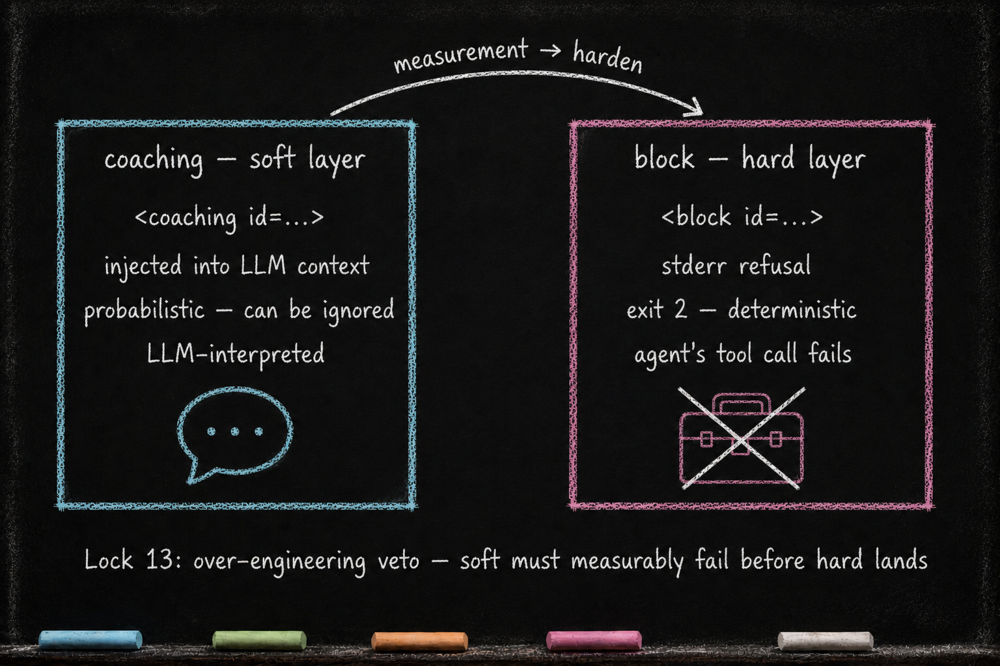

The Dual Voice Architecture
Essay 7.3 — The Plugin Kit, Part 3 of 9.
Essay 7.2 opened the Claude prototype’s load-bearing skeleton — CLAUDE.md, hooks, scripts — and named the PLUGIN-LOCK ceremony that gates hard-substrate edits. This sub-essay opens the soft-memory organ that most plugins in that architecture double: voice.xml. The hooks-side and scripts-side surfaces share one XML schema family across different audiences. Getting them confused is the most common new-user error in plugin authoring.
Runtime boundary. The two-file voice architecture below is specific to the original Claude Code Seed. The transferable behavioral distinction is between agent-facing guidance or refusal and operator-facing status, with explicit audience, delivery, authority, and verification. Other runtimes may express those channels with a root voice file, schemas, libraries, hooks or equivalent lifecycle controls, and need not use two voice.xml files.
voice.xml × Two — The Dual Surface
This is the organ that confuses new users most, and the one where the relational anatomy matters most.
The two voice surfaces are different files with different audiences. hooks/voice.xml and scripts/voice.xml share an XML schema family and identify entries by id, but they do not need to contain the same element types. Hooks-side files commonly carry coaching and block messages; scripts-side files commonly carry status, warning, and error messages. Their consumers, rather than matching tag inventories, define the split. ⓘ
hooks/voice.xml — The Agent-Facing Surface
What it is. Strings the plugin emits at hook fire-time: coaching messages that nudge the agent at a specific moment (entering a phase, crossing a context tier, having just dispatched a subagent), and block messages used by guards that refuse an action. ⓘ
Who reads it. The LLM agent. Voices delivered via hooks land in the agent’s context window — either as soft context injections or as refusal reasons from blocking hooks. The callsite and hook result determine the delivery behavior; the XML tag alone does not. ⓘ
Who writes it. Mostly CONDENSE step 4, which consumes [VOICE-UPDATE] markers emitted by other phases. The historian subagent also updates voice files when the plugin’s evolution requires new coaching. In the historical prototype, voice.xml is treated as a soft-memory surface rather than PLUGIN-LOCK-only code. ⓘ
What it depends on. The shared voice helper: its get_voice function loads entries and substitutes {{var}} placeholders. ⓘ
scripts/voice.xml — The Operator-Facing Surface
What it is. Strings the plugin’s CLI prints to the operator’s terminal. When safe-lock.sh restores a checkpoint after a test failure, the operator sees a short status line in the terminal. ⓘ
Who reads it. The primary audience is the human operator. This is terminal output printed to standard output or standard error, rather than context deliberately injected by a lifecycle hook. When the agent invokes the command through a tool, that output may also return in the tool result. ⓘ
Who writes it. Same ownership pattern as hooks/voice.xml: CONDENSE and the historian repair wording as soft memory, while the scripts that consume those strings remain hard-substrate code.
What it depends on. Same voice-helper.
Why the split matters
Same intent — both surfaces carry the plugin’s voice. Different delivery channels and primary audiences — the LLM receives structured paragraphs that frame a lifecycle event or refusal; the human reads CLI status lines that flag what happened. Wording often differs between the two for the same conceptual event. Auditor scripts that check voice ids have to inspect both files; auditing only one can report valid ids from the other as orphaned. ⓘ

Soft vs hard at the delivery boundary. A <coaching> entry carries language intended for a soft context injection; a <block> entry carries language intended to explain a refusal. The tag records intent. The hook callsite supplies enforcement by choosing the output path and, for a blocking command hook, the blocking exit result. The Lock-13 over-engineering veto says: new behavioral controls start as coaching; only when measurement shows coaching consistently fails does the design add the hard callsite that enforces a block. ⓘ
The YAML-injection pairing. Stage 3 of the maturation arc (covered in Essay 8) is a job whose plan_file is a .yaml — a Stage-3 job, chosen at cycle-1 PLAN like any other Stage, whose .yaml plan injects job-specific context at each phase entry. Stage 3 is identical to Stage 2 in completion semantics; only the plan-file format differs. A Stage-3 job’s .yaml per-phase fields pair with voice ids by convention. The YAML field name maps to a voice id directly; voice-helper augments the rendered voice text at phase entry — appending the YAML value by default, or replacing or prepending it when the YAML entry specifies a mode (the three modes are detailed in Essay 6.10b and Essay 8.2). The pairing has a contract surface: a YAML key must match a voice id that some hook or script actually calls, otherwise the plan loader rejects the YAML at validate-format time with a did you mean suggestion. New YAML fields require no parser change — add the voice id to the plugin’s voice.xml and wire a get_voice callsite in a hook or script (making it callable — orphan ids are rejected by the YAML validator), and the seed agent picks up the new pairing on the next phase entry. ⓘ
The new-plugin lens. When you guide your seed to add coaching for a new behavior, the seed writes the coaching string to hooks/voice.xml first (cheap, soft). If the operator later observes that coaching consistently fails to hold, the seed adds the hard variant and wires the guard to return a blocking result. The voice entry explains the refusal; the callsite enforces it. The seed never invents a third voice surface. The split between LLM-facing and operator-facing voice surfaces is structural. ⓘ
A consulting firm’s Claude-based Seed could carry the prototype’s dual-file voice split: hooks/voice.xml coaches the agent on deliverable-checklist enforcement; scripts/voice.xml prints terminal status to the consultant when deliverable.sh validate runs. Within that runtime, the same schema serves separate agent-facing and operator-facing surfaces under one ceremony. ⓘ
In this Claude implementation, the hooks-side and scripts-side surfaces share one schema family. The hooks-side surface deliberately enters the agent’s lifecycle context; the CLI-facing surface primarily serves the operator through terminal status. The next sub-essay opens the organ that almost every plugin needs but that no plugin lets anyone else touch — the private data.json state.
Essay 7.3 — The Plugin Kit, Part 3 of 9.
Previous: Essay 7.2 — Skeleton: CLAUDE.md, Hooks, and Scripts — the Claude prototype organs governed by PLUGIN-LOCK. Next: Essay 7.4 — data.json — The Hidden State — per-plugin private state, script-mediated.
Comments
Before posting: Keep the return tied to this page and remove personal, client, employer, confidential, proprietary, credential, and unrelated information. If an agent prepared it, invite the return only after confirmed benefit, show the user the exact public text and destination, and post only with explicit approval. See the contribution guide.